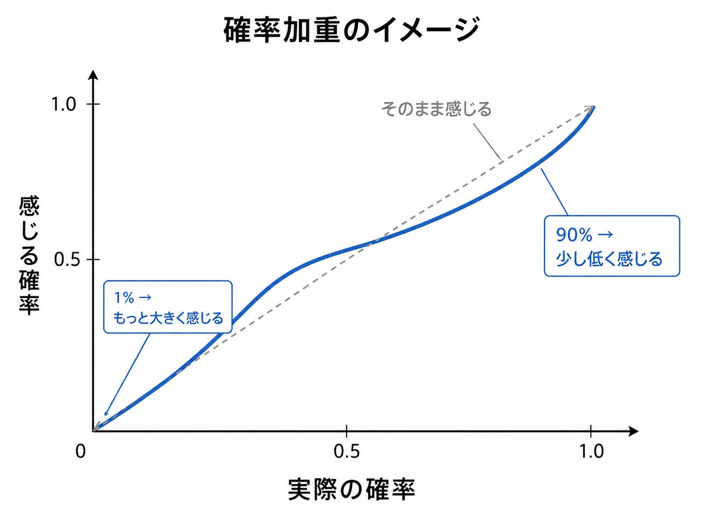

「絶対」って、何％ですか？

どーも、とーるです。
突然ですが、質問です。
誰かから、
「これ、絶対やった方がいいよ。」
と言われたとします。
さて。
この「絶対」って、
何％だと思いますか？
100％？
99％？
90％？
80％？
たぶん、答える側によって結構バラバラになると思うんです。
これ、僕はSNSを見ていてよく気になります。
「これ絶対伸びます」
「絶対やった方がいいです」
「この方法なら絶対売れます」
「絶対こっちの方がいい」
めちゃくちゃ使われますよね。
でも、この「絶対」。
今日はそんな話です。
✦
言っている側の「絶対」は、意外と80％くらいだったりする
例えば友達に、
「このラーメン屋、絶対うまいから行ってみて！」
と言われたとします。
この人、本当に、
100人中100人が必ず美味しいと感じる
と思っているでしょうか。
たぶん違います。
本人の感覚としては、
「俺はかなり好き」
「今まで連れていった友達もだいたい美味しいと言っていた」
「たぶん君も好きだと思う」
くらいでしょう。
つまり、
感覚的には80％とか90％くらい。
でも、その高い確率を日常会話では、
と表現することがあります。
別に嘘をつこうとしているわけではありません。
「かなり可能性が高いよ」
くらいの意味で、
「絶対いいよ！」
と言っているだけ。
日常会話なら、これでそんなに問題になりません。
ラーメンが口に合わなかったら、
「いや全然うまくないじゃん（笑）」
で終わります。
問題は、
これをビジネスでやったときです。
✦
聞いた側の「絶対」は100％かもしれない
例えばSNSで、
と言ったとします。
発信者側としては、
「かなり再現性が高い」
くらいの感覚かもしれません。
本人の頭の中では、
85％くらい。
でも、
受け取った側は違います。
「絶対売れる」
と言われたら、
売れない可能性がない
と感じる人もいます。
つまり100％。
リスク0％です。
すると何が起きるか。
実際に売れなかったとき、
発信者は、
となる。
いやいや。
じゃあ何％だったん（笑）
となります。
これ、
言葉の問題に見えますが、
マーケティングでは結構大きな問題だと思っています。
なぜなら、
✦
人間は、確率をそのまま感じていない
ここで行動経済学の話を少しだけします。
人は、
「1％なら1％」
「50％なら50％」
「90％なら90％」
と、数字をそのまま同じ重さで感じているわけではありません。
プロスペクト理論では、これを確率加重という考え方で説明します。
ざっくり言えば、
という傾向があります。ノーベル賞の解説でも、低確率を過大に、高確率を過小に重みづけすることがプロスペクト理論の特徴として説明されています。
代表的な確率加重の推定例では、
実際の確率が1％でも、意思決定上は約5.5％ほどの重みを持ち、
反対に90％は、約71％ほどの重みとして扱われる形になります。

ここで注意してほしいのは、
「1％を見た人が、頭の中で5.5％だと勘違いする」
という意味ではありません。
1％だとは分かっている。
でも、
行動を決めるときには、1％以上の存在感を持ってしまう。
ということです。
宝くじなんか分かりやすいですよね。
当たる確率がめちゃくちゃ低いことは分かっている。
でも、
「もしかしたら……」
が妙に大きく感じる。
反対に、
「90％成功します」
と言われても、
なんとなく、
「でも10％失敗するんでしょ？」
が気になる。
人間って、数字ほど素直ではないんです。
✦
そして「99％」と「100％」は、たった1％差ではない
ここが今回、一番面白いところです。
数字だけを見ると、
90％から91％になるのも1％アップ。
99％から100％になるのも1％アップ。
同じ1％です。
でも、
人の感じ方は全然違います。
Kahneman自身も、確率の10％から11％の差より、
0％から1％、あるいは99％から100％の差の方が心理的に大きく感じられることを説明しています。
99％なら、
まだ、
「失敗するかもしれない」
があります。
100％になると、
「失敗しない」
に変わります。
たった1％増えただけなのに、
意味そのものが変わるんです。
だから、
「ほぼ大丈夫」
と、
「絶対大丈夫」
は、
似ているようで結構違う。
「絶対」という言葉は、
単に確率が高いという意味だけではなく、
なんです。
✦
SNSでは「絶対」が安売りされすぎている
これをSNSマーケティングに戻します。
SNSって、
断言した方が強いんですよね。
「これをやると売れやすくなります」
より、
「これをやれば売れます」
の方が強い。
「おすすめです」
より、
「絶対やるべきです」
の方が目に止まる。
「僕の経験上、成功確率が高いと思います」
より、
「これが正解です」
の方が保存される。
だから、どんどん言葉が強くなります。
その結果、
「絶対」
「必ず」
「これ一択」
「これだけ」
「誰でも」
みたいな言葉が増えていく。
でも、
僕はここに結構怖さがあると思っています。
発信者本人は、
かもしれない。
でも、
初心者側は、
100％保証された答え
として受け取ってしまう可能性がある。
すると、
「この通りやったのに売れませんでした」
が起きます。
発信者は、
「あなたの場合はターゲット設定が……」
「行動量が……」
「商品によって違うので……」
と言い始める。
いや、
後から条件増えたな（笑）
となります。
✦
僕が「絶対」をあまり使いたくない理由
僕も相談を受けていて、
「これ、どっちがいいですか？」
と聞かれることがあります。
そのとき、
かなり自信があることもあります。
たぶんこっち。
かなりの確率でこっち。
過去の事例から見てもこっち。
それでも、
なるべく、
「絶対こっちです」
とは言わないようにしています。
なぜなら、
ビジネスって、
変数が多すぎるからです。
商品。
価格。
顧客。
タイミング。
市場。
発信者のキャラクター。
既存顧客との関係。
競合。
導線。
同じ方法でも、
人が変われば結果も変わります。
だから僕なら、
「僕ならこっちにします」
「今の条件なら、こっちの確率が高いと思います」
「現時点では、この方法が一番合理的だと思います」
くらいにします。
逃げているわけではありません。
むしろ、
つもりです。
✦
「絶対」と言われた方が安心する。でも、それが危ない
ここがマーケティングの難しいところです。
買う側としては、
「たぶん大丈夫です」
より、
「絶対大丈夫です」
と言われた方が安心します。
特に初心者ほどそうです。
分からないから。
判断基準がないから。
だから、
「これが正解です」
と言ってくれる人についていきたくなる。
これはある意味、仕方ありません。
不確実な状態って気持ち悪いですからね。
でも、
ビジネスに100％なんてほとんどありません。
だから本当に必要なのは、
なんだと思います。
「この投稿なら絶対伸びる」
ではなく、
なぜ伸びる可能性が高いのか。
「この商品なら絶対売れる」
ではなく、
誰に、なぜ刺さる可能性が高いのか。
「今は絶対リールです」
ではなく、
あなたの場合、本当にリールがKSFなのか。
そこまで考えられる方が、
一つの「絶対」を覚えるより、
ずっと長く使えます。
✦
「絶対」と言われたら、何％か聞いてみる
なので、
これからSNSで、
「絶対やった方がいいです」
「絶対売れます」
「絶対こっちです」
という言葉を見かけたら、
頭の中で一回聞いてみてください。
「ちなみに、その絶対って何％？」
80％なのか。
95％なのか。
99％なのか。
本当に100％なのか。
そして、
残っている確率では何が起こるのか。
そこまで考えるだけでも、
ノウハウの見え方はかなり変わります。
ちなみに、
僕が友達に、
「このラーメン屋、絶対うまいよ」
と言ったときの「絶対」は、
たぶん85％くらいです。
残り15％は、
知りません。
好みなので（笑）
でも、
お金をもらって何かを教えるなら、
その15％の存在まで伝える。
僕はそっちの方が、
よっぽど誠実なマーケティングだと思っています。
だからこそ、
言った側の「絶対」と、
聞いた側の「絶対」が、
本当に同じ数字なのか。
少し考えてみてください。
もしかすると、
SNSで起きているトラブルのいくつかは、
たった一言の中にある、
80％と100％のズレ
から始まっているのかもしれません。
とーる｜猫好きの行動経済アナリスト